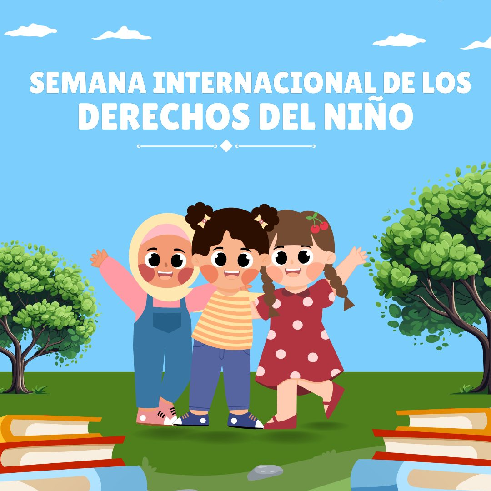
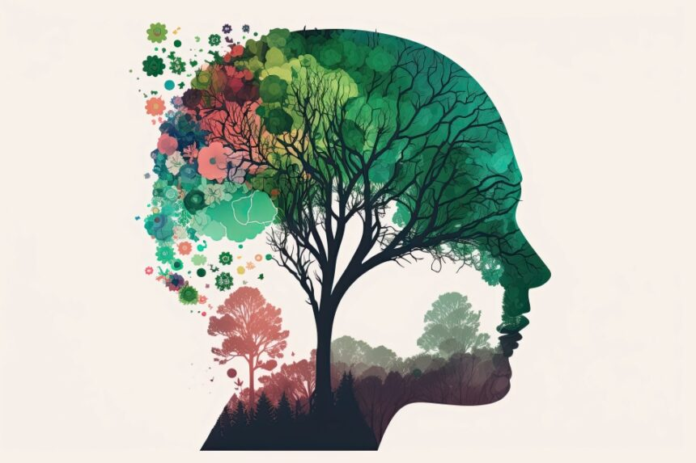
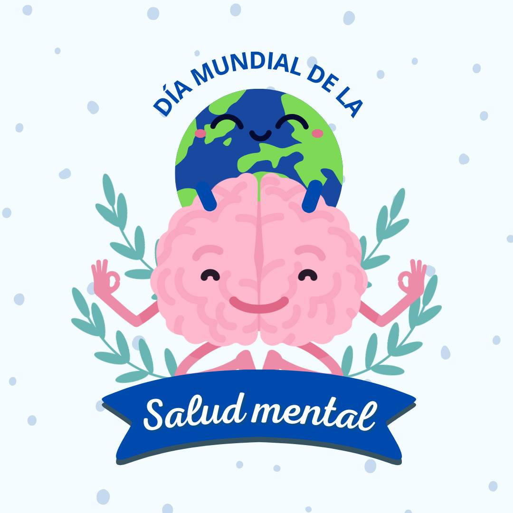
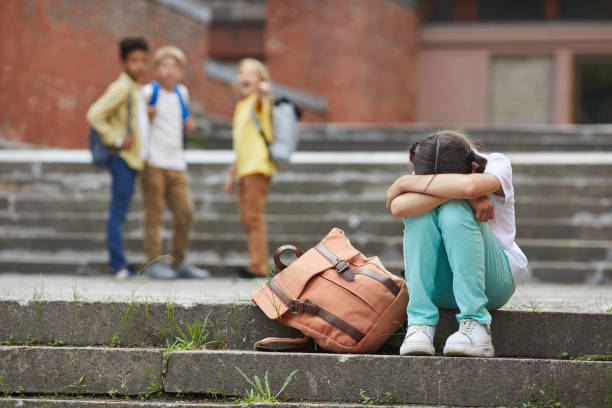

Notícias y Eventos

Día Internacional de los derechos del niño
Así se celebro el dia de los derechos del niño en nuestra I.E.P Bertol Brecht.
✨ ¡Celebramos el Día Internacional de los Derechos del Niño! 🎉
Durante toda una semana, hemos realizado una serie de actividades enriquecedoras para concienciar
sobre la importancia de los derechos de nuestros pequeños. 🧒👦
Desde talleres interactivos hasta charlas inspiradoras, cada actividad ha resaltado la voz y el
valor de cada niño en nuestra comunidad. 💬❤️
Agradecemos a todos los estudiantes, maestros y padres por su participación. Juntos, seguimos
formando líderes del futuro. 🌍✨
Ver fotos en facebook

Día mundial de la salud mental
Cuidemos la salud mental de nuestro niños, ya ellos son más delicados.
🧠✨ Día Mundial de la Salud Mental: ¡Hablemos de ello! ✨🧠

En conmemoración del Día Mundial de la Salud Mental, el 10 de octubre, nuestra área de Psicología organizó
actividades especiales para que los alumnos de todos los niveles pudieran explorar y aprender sobre sus
emociones.
🧠 Estaciones Emocionales:
- 😋 Estación de la Alegría: Los estudiantes participan en juegos y dinámicas que promueven la risa y la
diversión.
- 😢 Estación de la Tristeza: Se ofrecen espacios para reflexionar sobre momentos difíciles, fomentando
la empatía y el apoyo mutuo.
- 😒 Estación de la Furia: A través de actividades creativas, los alumnos aprenden a canalizar su frustración
de manera positiva.
- 😨 Estación de la Temor: Se realizan juegos inesperados que enseñan a los niños a aceptar lo desconocido
con curiosidad.
➡ Estas actividades no solo ayudan a los alumnos a identificar sus emociones, sino que también fortalecen
su capacidad para comunicarse y apoyarse entre sí. 💬❤️
¡Agradecemos a todos los que participaron y contribuyeron a hacer de este día una experiencia inolvidable!
🙏💕
👀: Si es parte de la comunidad académica brechtiana y tiene alguna duda o consulta, no dude en solicitar
una cita con el área de Psicología Escolar. Estaremos encantados de ayudarle en lo que necesite.

Desfile de Inicial
Así desfilaron nuestro niños en la gran calle Real, en representación de nuestra Institución educativa.

Dile NO! al bullying
Le decimos NO!, al bullying o acoso escolar dentro de nuestra educación y es importante concientizar este tema con nuestros estudiantes.
Le decimos NO! al bullying o acoso escolar
¿Sabes qué es el bullying?
🤔 En este video te explicamos todo sobre este problema que afecta a muchos estudiantes.
Conocer los signos es el primer paso para prevenirlo y apoyar a las víctimas. 🚩 ¡Mira el video y compártelo con tu comunidad! 📽️
📣 Si formas parte de nuestra comunidad educativa brechtiana y sientes que has sido víctima o testigo de un acto
de bullying, no dudes en acudir a un maestro, coordinador de nivel o al Área de Psicología para denunciarlo.
¡Tu voz es importante! 🗣️🤝📚
#StopBullyingDay
#SinAcoso
#juntosvencemoselbullying

Título de la Noticia 5
Descripción breve de la noticia 2. Más detalles sobre la noticia...

Título de la Noticia 6
Descripción breve de la noticia 3. Más detalles sobre la noticia...
Título de la Noticia 7
Descripción breve de la noticia 3. Más detalles sobre la noticia...